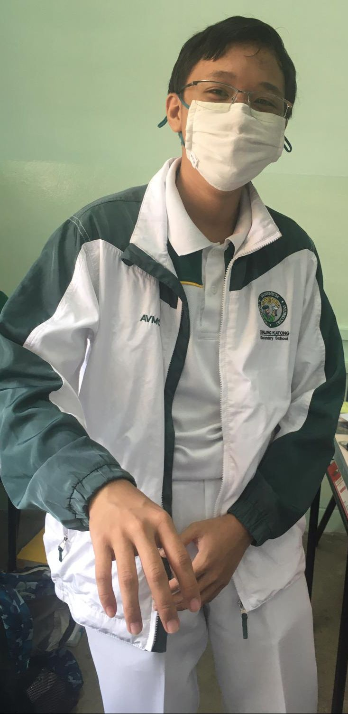
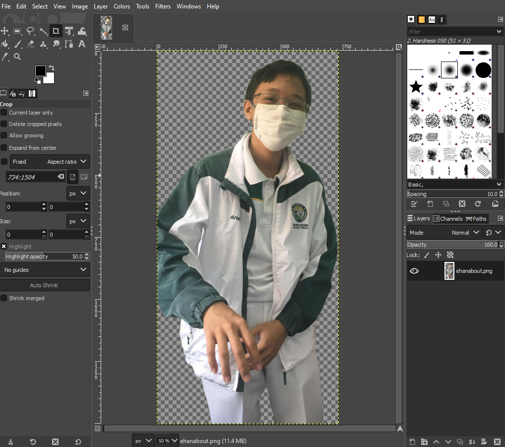
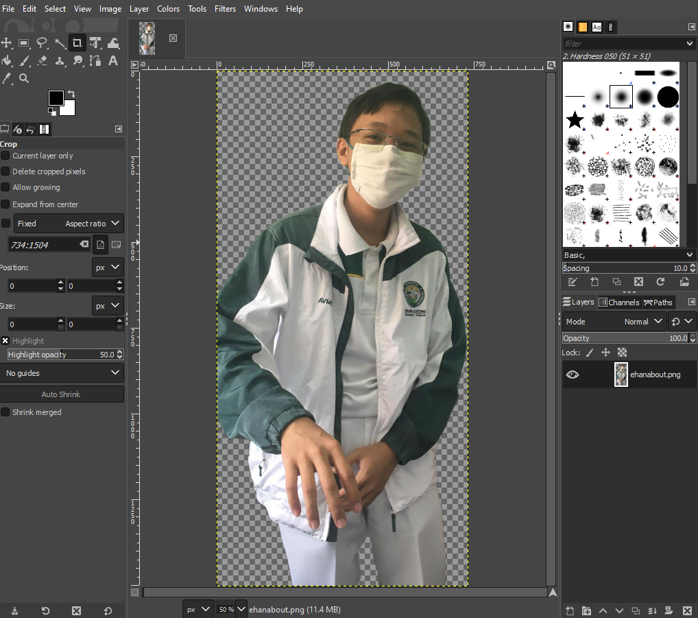
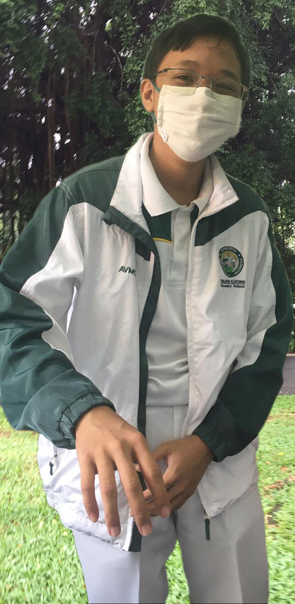
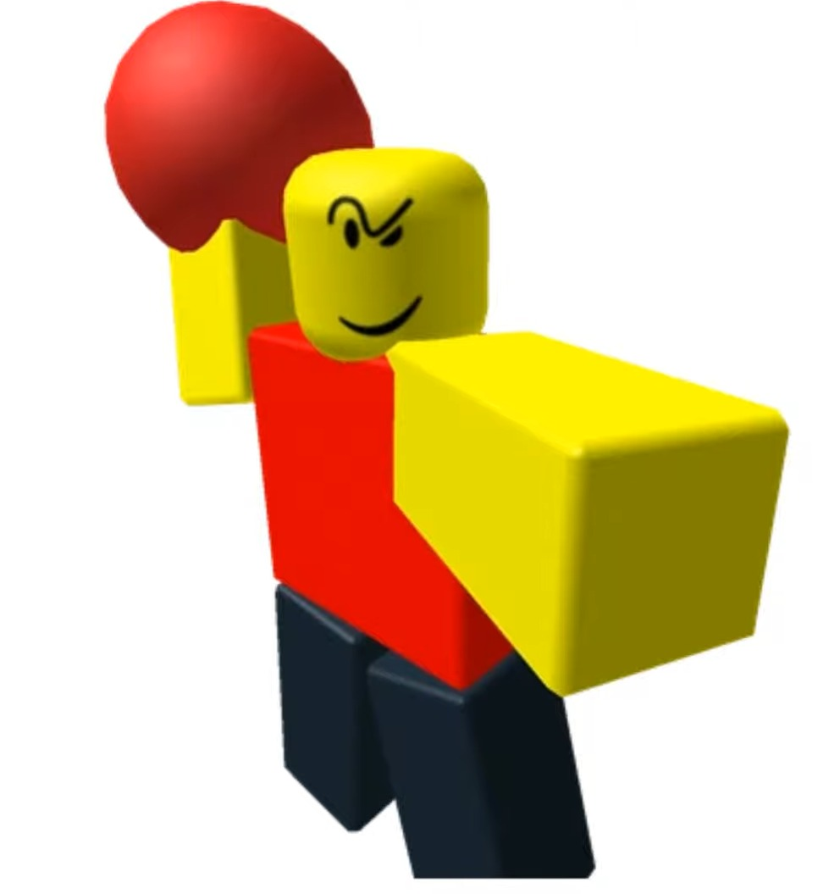
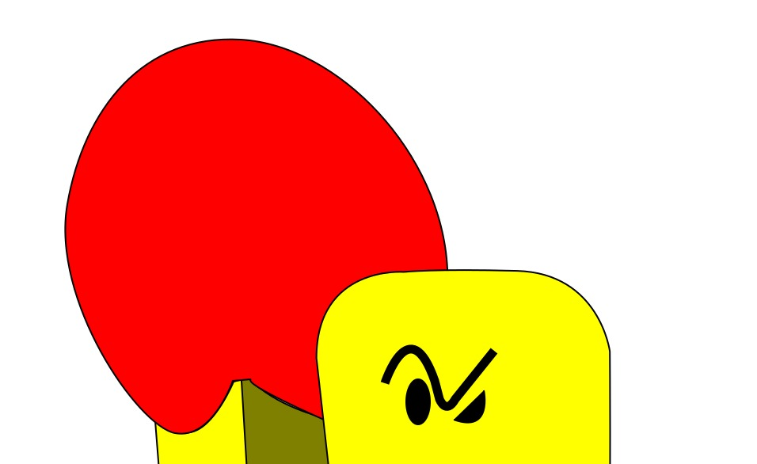
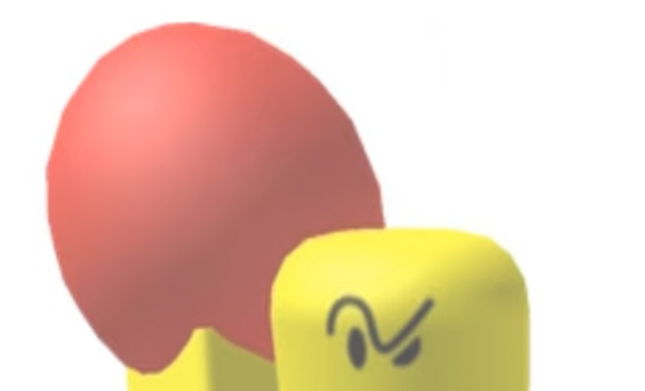
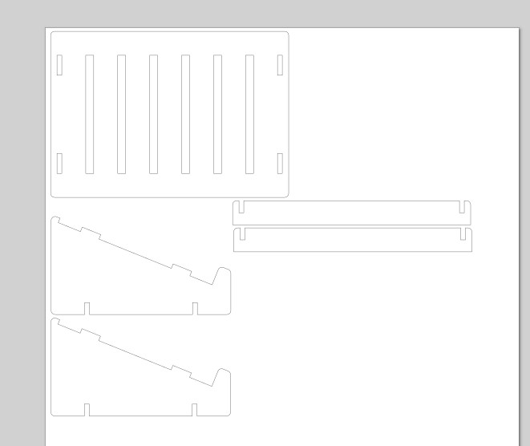

Project navigation
CAD part 1(GIMP, Inkscape, Fusion 360) • CAD part 2(Fusion 360 and chess piece) • Phone Stand • 2D graphics and computer-controlled cutting • Laser-cut accessories box • Electronics and embedded programming
2D graphics and computer-controlled cutting
The following is copied from the CAD part 1 page
GIMP and image editing
Using GIMP, I removed the background from my homepage image using nodes to outline myself and delete the background...
 

and put myself in the Botanic Gardens by adding an image below the PNG layer of me!
Raster vs Vector
Below is Raster image.
Raster images use pixels to "draw" the image, which do not resize as you zoom in which would make it more pixelated and blurry.
Using Inkscape, a CAD programme, I created a vector image based on the above picture.

Vector images use data about geometric points and shapes to draw an image, which keeps a high resolution when zoomed in.
As mentioned earlier, vector images(left) do not get blurrier when zoomed in unlike raster images(right).
 Inkscape can be used for graphic design as well. I used the CAD software to create a simple logo for myself with my initials in the fablab logo colours.

Computer-controlled cutting
Laptop stand
I used fusion 360 to design the initial stand, before using the Chamfer tool (F) to round the edges out.
I then created a sketch on the side of the part that I wanted to use for the cut out, stopped the sketch and saved it as a dxf.

Stand model Laser cutting pattern
{kind=link}